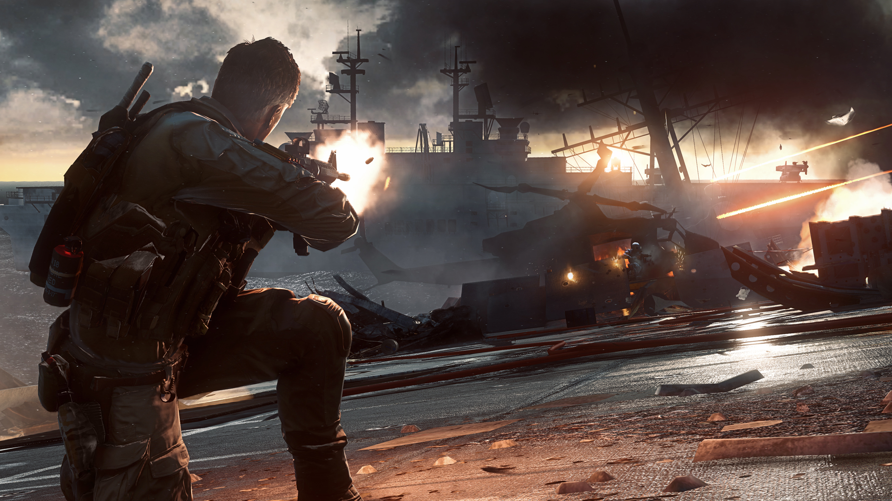

Natuurlijk heb ik meerdere hobby's, zoals de meeste mensen hebben. Ik houdt mij voornamelijk bezig met mountainbiken, hardlopen en zo nu en dan ook een beetje gamen.
Als ik ga mountainbiken dan ben ik op veel plekken te vinden in omstrekken maar soms ook wat verder weg. Meestal mountainbike in de regio hierbij moet je denken aan Holten, Lemele, Helendoorn en Rijsen. als ik verder weg ga dan ga ik vaak naar de Veluwe daar ligt een zeer mooie route van 49.5 km. Ik blijf niet alleen in Nederland om te mountainbiken ik ga ook twee keer per jaar naar Winterberg in Duitsland daarnaast ga ik ook nog in de zomervakantie naar Oostenrijk en Italië. Als ik in buitenland ga mountainbiken dan ga ik altijd downhillen aangezien ik dat het mooiste discipline vindt van mounatinbiken omdat je daarvan echt een "kick" krijgt. Downhillen kan je niet met een normale mountainbike hiervoor heb je een Downhill/freeride-bike nodig, deze soort mountainbikes hebben een grote veerweg aan de voorkant en achterkant.
Harlopen doe ik meestal door de week 's avonds en/of in het weekend 's ochtends. Meestal loop ik ongeveer 8 kilometer in drie kwartier.
Ik game meestal elke dag wel even of het nou guild wars 2 is of Battlefield het maakt niet uit. Ik speel de meeste spellen wel. Ik hou voornamelijk van first person shooters en MMO's. Ik vindt Battlefield een van de beste series van First Person Shooters omdat er veel destructie is van onder andere gebouwen en andere infrastructuur. Ik hou van spellen waarbij samenwerken de sleutel is tot de overwinning, dat is bij Battlfield en de meeste MMO's ook zo. Guild Wars is dus een RPG MMO. RPG staat voor Role Playing Game dat houdt in dat je een bepaalde rol hebt die je moet vervullen in het spel om goed te kunen zijn. Een MMO staat voor Massively Multiplayer Online Game dat houdt simpel weg in dat er veel mensen samenwerken om iets te kunnen behalen. Verder speel ik ook nog Counter Strike: Global Offensive. Counter Strike is een spel waarbij je samen tactisch moet spelen om het spel te kunen winnen, een ander belangrijk punt bij Counter Strike is het reactievermogen dat iemand heeft.
